Code
region <- "Grand Est"
path_region <- "Grand_Est"FINIR CATCH COVER CROPS
This is the pre-processing of the crops fertilization data in Grand Est region for the years 2015-2020. It uses the RPG data coupled with typical fertilization values. Vineyards and orchards are poorly reported in the RPG database, so we rather use the TOPO database for these 2 crops.
knitr::opts_chunk$set(message=F, warning=F, results=F, fig.align = "center", dev='png')
# Load the function file
source("functions.R")
#included:
#-function to save csv f_save_csv_files
#-set the default scale_color and scale_fill to viridis theme
#-loads the core tidyverse package
# Load the required libraries
library(sf) #to read shapefiles
library(data.table) #fast aggregating of large data
library(arrow) # to write compressed parquet file
library(plotly) #for interactive plots
library(cowplot) #for plot_grid in multiple plots
#set theme for graphs
theme_set(
theme_classic() +
theme(
panel.grid.major.y = element_line(), #no vertical lines by default
#text = element_text(family = "Times New Roman"), #default font
plot.title = element_text(face="bold"), #graphs titles in bolds
)
)
CRS <- 2154 #Coordinate system : Lambert-93 (2154)# load Region keys (name; code)
regions_keys <- read_csv("source/regions_data/regions_keys.csv")
# select region
regions_keys <- regions_keys %>%
rename(name_region_parcel = name_region) %>%
filter(name_region_parcel ==region)
# load Region areas
# total area
region_area_ha <- read_csv("source/regions_data/regions_areas.csv") %>%
filter(region_name==region) %>%
pull(region_area_ha)
# agricultural land area
region_agri_land_ha <- read_csv("source/regions_data/regions_areas.csv") %>%
filter(region_name==region) %>%
pull(region_agricultural_land_ha)
#load region name and number key
name <- region
key <- unique(regions_keys$code_region[regions_keys$name_region_parcel==region])
rm(regions_keys)EXPLIQUER CE QUE CA FAIT
First we load the data where for each agricultural plots, the cultivated crop and the area are reported (PARCELLES_GRAPHIQUES files).
We also load the data with the agricultural crop clusters (ILOTS_ANONYMES files). These agricultural crop clusters gather several contiguous agricultural plots from 1 same farmer. This is used to check that the reported areas are coherent between the 2 files.
We assign each agricultural plot to an agricultural crop clusters.
PREPROCESSING, UNCOMMENT TO REPRODUCE
We link each agricultural plot to a region (old French regions). This will be used to assign to each plot a regional fertilization rate.
# #section to load RPG data for years 2015-2020 and gather them, transform parcels polygons to points (to save memory), and attribute each agricultural plot to an old region (smaller regions than current ones, used later to attribute regionalized fertilization values)
#
#
#
# # load old regions geographical data (used to link each plot to region fertilization practices)
# sf_old_regions <- st_read(
# "source/maps/old_regions/regions-20140306-5m.shp",
# options = "ENCODING=WINDOWS-1252" #encoding to read special French characters
# )
# sf_old_regions <- sf_old_regions %>%
# #select only columns of interest, rename in English
# select(
# code_old_region_parcel = code_insee,
# name_old_region_parcel = nom
# ) %>%
# #load only metropolitan areas, remove overseas territories
# filter(
# !(name_old_region_parcel %in% c("Guadeloupe", "Martinique", "Guyane", "La Réunion", "Mayotte"))
# ) %>%
# # transform into our coordinate system (Lamber 93)
# st_transform(CRS)
#
#
#
#
# #loads each file year, and bind the files together after adding a year column
# final_sf_object <- rbindlist(
# lapply(2015:2020, function(year) {
# message("Key:", key, " Name:", name, " Year:", year, "\n \n")
#
# #path for individual agricultural plots
# file_path_fields <- paste0(
# "source/RPG_data/RPG_data/R",
# key, "_", path_region, "/",
# "RPG_2-0__SHP_LAMB93_R", key, "_", year,
# "/RPG/",
# "1_DONNEES_LIVRAISON_", year, "/RPG_2-0_SHP_LAMB93_R", key, "-", year,
# "/PARCELLES_GRAPHIQUES.shp"
# )
#
# # path for agricultural crop clusters
# file_path_anonym <- paste0(
# "source/RPG_data/RPG_data/R",
# key, "_", path_region, "/",
# "RPG_2-0__SHP_LAMB93_R", key, "_", year,
# "/RPG/",
# "1_DONNEES_LIVRAISON_", year, "/RPG_2-0_SHP_LAMB93_R", key, "-", year,
# "/ILOTS_ANONYMES.shp"
# )
#
# # load individual agricultural plots and agricultural crop clusters
# temp_fields <- st_read(file_path_fields)
# temp_anonym <- st_read(file_path_anonym)
#
# #data.table object to be faster
# setDT(temp_fields)
# setDT(temp_anonym)
#
# # Calculate polygon centroids of fields (data.table syntax)
# temp_fields[, centroid := st_centroid(geometry)]
# temp_fields[, PARCEL_lat_RGF93_LAMB_93 := st_coordinates(centroid)[, "Y"]]
# temp_fields[, PARCEL_lon_RGF93_LAMB_93 := st_coordinates(centroid)[, "X"]]
#
# #compute plot area to check coherence
# temp_fields[, SURF_PARC_computed := round(st_area(geometry)/10000, 2)] #st_area in m2, 1 ha = 10 000 m2
# temp_anonym[, SURF_ILOT_computed := round(st_area(geometry)/10000, 2)]
#
# #remove geometry polygon column to save memory
# temp_fields <- temp_fields[, !"geometry", with = FALSE]
#
# #back to sf object for subsequent geographical join
# temp_fields <- st_sf(temp_fields, crs = CRS)
# temp_anonym <- st_sf(temp_anonym, crs = CRS)
#
# #attribute each agricultural parcel to an old region (by geographical join)
# temp_fields <- st_join(temp_fields, sf_old_regions, join = st_intersects)
#
# #attribute each each agricultural parcel to the anonym plot it belongs to, by geographical join (is the field point in the anonym polygon ?)
# temp_fields <- st_join(temp_anonym, temp_fields, join = st_intersects, left=TRUE)
# #st_join(temp_fields, temp_anonym, join = st_within) would be conceptually more correct, but is way slower
#
# #remove anonym filed after join, to save memory
# rm(temp_anonym)
#
# #reset to data.table object to be faster
# setDT(temp_fields)
#
# #remove geometry polygon column to save memory
# temp_fields <- temp_fields[, !"geometry", with = FALSE]
#
# #add year, region code and region name
# temp_fields[, Year := year]
# temp_fields[, code_region_parcel := key]
# temp_fields[, name_region_parcel := name]
#
# #files_list <- c(files_list, list(temp_fields))
#
# message("\n \n \n")
#
# return(temp_fields)
# })
# )
#
# #transform surface to numerics
# final_sf_object[, SURF_PARC_computed := as.numeric(SURF_PARC_computed)]
# final_sf_object[, SURF_ILOT_computed := as.numeric(SURF_ILOT_computed)]
#
# #add denomination "None or not reported" for catch and cover crops
# final_sf_object[, CULTURE_D1 := fifelse(is.na(CULTURE_D1), "None or not reported", CULTURE_D1)]
# final_sf_object[, CULTURE_D2 := fifelse(is.na(CULTURE_D2), "None or not reported", CULTURE_D2)]
#
# #remove anonym plots not linked to any actual agricultural plot
# anonyms_orphans <- final_sf_object[is.na(ID_PARCEL), .(ID_ILOT, SURF_ILOT_computed, Year, code_region_parcel, name_region_parcel)][, unique(.SD)]
# final_sf_object <- final_sf_object[!is.na(ID_PARCEL)]
#
#
#
# # if you want to check that reported plot surface are coherent with the actual polygon surface
# #ggplot(final_sf_object) + geom_point(aes(SURF_PARC, SURF_PARC_computed))
#
#
# #If you want to check coherence between ILOTs and their attributed PARCELs
# # temp <- final_sf_object[,
# # .(area_group_of_PARCELS = sum(SURF_PARC_computed, na.rm=T),
# # area_ILOT_of_PARCELS = SURF_ILOT_computed),
# # by = .(Year, ID_ILOT)]
# #
# # ggplot(temp) +
# # geom_histogram(aes(area_ILOT_of_PARCELS/area_group_of_PARCELS)) +
# # scale_x_log10() +
# # labs(x="ratio between ILOT area and\nthe sum of PARCELs area attributed to it")
#
#
# # saves pre-processed regional file in parquet format
# arrow::write_parquet(final_sf_object, paste0("source/RPG_data/preprocessed_RPG_R", key, "_", path_region, "_2015_2020.parquet"))
#
# rm(final_sf_object, sf_old_regions)I load the pre-processed regional RPG data.
#load pre-processed file
RPG <- arrow::read_parquet(paste0("source/RPG_data/preprocessed_RPG_R", key, "_", path_region, "_2015_2020.parquet"))
#renames columns
setnames(RPG, old = "CODE_GROUP", new = "CODE_GROUPE_CULTURE")
setnames(RPG, old = "CODE_CULTU", new = "CODE_CULTURE")
setnames(RPG, old = "ID_PARCEL", new = "ID_RPG")
setnames(RPG, old = "SURF_PARC", new = "parcel_area_ha")
setnames(RPG, old = "PARCEL_lat_RGF93_LAMB_93", new = "lat_RGF93_LAMB_93_parcel")
setnames(RPG, old = "PARCEL_lon_RGF93_LAMB_93", new = "lon_RGF93_LAMB_93_parcel")I add the crops complete and simplified RPG French labels, using the crops RPG key codes. I also add a simplified common English label, and fertilization labels to match each crop to a mean fertilization value, in kg/ha.
keys_crops_groups_fertilization <- read_csv(
"source/keys_crops/keys_crops_groups_fertilization.csv")
f_match_labels <- function(main_dataset, keys_dataset, groups_codes, groups_names) {
matching_indices <- match(main_dataset[[groups_codes]], keys_dataset[[groups_codes]])
main_dataset[[groups_names]] <- keys_dataset[[groups_names]][matching_indices]
return(main_dataset)
}
#add French label RPG corresponding to groups codes CODE_GROUPE_CULTURE
RPG <- f_match_labels(
RPG, keys_crops_groups_fertilization,
"CODE_GROUPE_CULTURE", "LIBELLE_GROUPE_CULTURE"
)
#add French label RPG corresponding to detailed crops codes CODE_CULTURE
RPG <- f_match_labels(
RPG, keys_crops_groups_fertilization,
"CODE_CULTURE", "LIBELLE_CULTURE"
)
#add our English labels for each crop, based on detailed crops codes CODE_CULTURE
RPG <- f_match_labels(
RPG, keys_crops_groups_fertilization,
"CODE_CULTURE", "our_label"
)
#add the French crop_fertilization_label for each crop, based on detailed crops codes CODE_CULTURE, for future matching with fertilization values reported by surveys
RPG <- f_match_labels(
RPG, keys_crops_groups_fertilization,
"CODE_CULTURE", "crop_fertilization_label"
)
# keys_crops_groups <- read_csv2(
# "source/keys_crops/orginal_RPG_files/REF_CULTURES_GROUPES_CULTURES_2021.csv"),
# col_types = cols(
# CODE_CULTURE = col_factor(),
# LIBELLE_CULTURE = col_factor(),
# CODE_GROUPE_CULTURE = col_factor(),
# LIBELLE_GROUPE_CULTURE = col_factor()
# )
# )
#
# #adding the "not reported" categroy for catch and cover crops
# keys_crops_groups <- bind_rows(
# keys_crops_groups,
# data.frame(
# CODE_CULTURE = as.factor("None or not reported"),
# LIBELLE_CULTURE = as.factor("None or not reported"),
# CODE_GROUPE_CULTURE = as.factor("None or not reported"),
# LIBELLE_GROUPE_CULTURE = as.factor("None or not reported")
# )
# )
# keys_catch_cover_groups <- read_csv2(
# "source/keys_crops/keys_catch_crops_groups.csv",
# col_types = cols(
# CODE_CULTURE_DEROBEE = col_factor(),
# LIBELLE_CULTURE_DEROBEE = col_factor(),
# LIBELLE_GROUPE_CULTURE_DEROBEE = col_factor(),
# CODE_GROUPE_CULTURE_DEROBEE = col_factor()
# )
# )
# #adding the "not reported" categroy
# keys_catch_cover_groups <- bind_rows(
# keys_catch_cover_groups,
# data.frame(
# CODE_CULTURE_DEROBEE = as.factor("None or not reported"),
# LIBELLE_CULTURE_DEROBEE = as.factor("None or not reported"),
# LIBELLE_GROUPE_CULTURE_DEROBEE = as.factor("None or not reported"),
# CODE_GROUPE_CULTURE_DEROBEE = as.factor("None or not reported")
# )
# )
# RPG <- f_match_labels(
# RPG, keys_crops_groups,
# "CODE_CULTURE", "LIBELLE_CULTURE_DEROBEE_1"
# )
# #matching codes cover catch 1
# matching_indices <- match(RPG$CULTURE_D1, keys_catch_cover_groups$CODE_CULTURE_DEROBEE)
# RPG$LIBELLE_CULTURE_DEROBEE_1 <- keys_catch_cover_groups$LIBELLE_CULTURE_DEROBEE[matching_indices]
# RPG$LIBELLE_GROUPE_CULTURE_DEROBEE_1 <- keys_catch_cover_groups$LIBELLE_GROUPE_CULTURE_DEROBEE[matching_indices]
#
# #matching codes cover catch 2
# matching_indices <- match(RPG$CULTURE_D2, keys_catch_cover_groups$CODE_CULTURE_DEROBEE)
# RPG$LIBELLE_CULTURE_DEROBEE_2 <- keys_catch_cover_groups$LIBELLE_CULTURE_DEROBEE[matching_indices]
# RPG$LIBELLE_GROUPE_CULTURE_DEROBEE_2 <- keys_catch_cover_groups$LIBELLE_GROUPE_CULTURE_DEROBEE[matching_indices]
rm(keys_crops_groups_fertilization)I split the RPG data into 4 parts (explanation in the 2 following tabs).
# convert to arrow table, to filter data without creating heavy variables in environment
RPG <- arrow_table(RPG)
#select only orchards
RPG_orchards <- RPG %>% filter(our_label == "Orchards")
#select only vineyards
RPG_vineyards <- RPG %>% filter(our_label == "Vineyards")
#select only vegetables and floral crops
RPG_vegetables_floral <- RPG %>% filter(our_label == "Vegetables or floral crops")
#creates major crops by removing the other particular crops from main file
RPG_major_crops <- RPG %>% filter(!(our_label %in% c("Orchards", "Vineyards", "Vegetables or floral crops")))Vineyars and Orchards reporting is incomplete in the RPG database, so I use the more complete TOPO database (see comparison in the vineyards and orchards tabs in the Fertilization and Area paragraph below). The TOPO data was already pre-processed on the XX page.
#load vineyards and orchards regional data from TOPO database, convert to arrow table, to filter data without creating heavy variables in environment
#vineyards
TOPO_vineyards <- read_parquet("output/fertilization/temporary_data/TOPO_vineyards_orchards_data/vineyards.parquet")
TOPO_vineyards <- arrow_table(TOPO_vineyards)
TOPO_vineyards <- TOPO_vineyards %>%
filter(name_region_parcel == name)
#orchards
TOPO_orchards <- arrow::read_parquet("output/fertilization/temporary_data/TOPO_vineyards_orchards_data/orchards_without_fertilization.parquet")
TOPO_orchards <- arrow_table(TOPO_orchards)
TOPO_orchards <- TOPO_orchards %>%
filter(name_region_parcel == name)#function to load the files reporting fertilization values for the different crops types
f_load_fertilization_values <- function(columns_to_select, path){
dataset <- read_csv(path) %>%
select(all_of(columns_to_select))
setDT(dataset)
return(dataset)
}
core_variables_selected <- c(
"crop_fertilization_label",
"N mineral mean fertilization (kgN/ha)",
"P mineral mean fertilization (kgP/ha)",
"K mineral mean fertilization (kgK/ha)",
"N organic mean fertilization (kgN/ha)"
)#function that computes fertilization (kg) on each plot, based on its area (ha) and the typical fertilization value (kg/ha) for that particular crop
f_compute_fertilization <- function(dataset, keys_dataset, keys_variables, area_variable, unit){
dataset <- dataset %>% left_join(
keys_dataset,
by=keys_variables
)
dataset <- dataset %>%
mutate(
!!paste0("N mineral fertilization (", unit, "N)") := `N mineral mean fertilization (kgN/ha)` * {{ area_variable }},
!!paste0("P mineral fertilization (", unit, "P)") := `P mineral mean fertilization (kgP/ha)` * {{ area_variable }},
!!paste0("K mineral fertilization (", unit, "K)") := `K mineral mean fertilization (kgK/ha)` * {{ area_variable }},
!!paste0("N organic fertilization (", unit, "N)") := `N organic mean fertilization (kgN/ha)` * {{ area_variable }}
)
return(dataset)
}
#function to synthesize the values at the regional scale
f_regional_synthesis <- function(dataset, grouping_var) {
# Synthesize regional results
dataset <- dataset %>%
group_by(!!! syms(grouping_var)) %>%
summarise(
`area (Mha)` = sum(parcel_area_ha, na.rm = TRUE) / 10^6,
`N mineral fertilization (ktN)` = sum(`N mineral fertilization (kgN)`, na.rm = TRUE) / 10^6,
`P mineral fertilization (ktP)` = sum(`P mineral fertilization (kgP)`, na.rm = TRUE) / 10^6,
`K mineral fertilization (ktK)` = sum(`K mineral fertilization (kgK)`, na.rm = TRUE) / 10^6,
`N organic fertilization (ktN)` = sum(`N organic fertilization (kgN)`, na.rm = TRUE) / 10^6
) %>%
collect()
return(dataset)
}Major crops and Vegetables and floral crops area is based on the RPG data, considered complete. Major crops fertilization values are based on the French Practical Crop Surveys on major crops, temporary leys and grassland (2017). For vegetables and floral crops, whose fertilization values are based on AND International report.
# MAJOR CROPS
#load major crops and grasslands fertilization values, by crop x old region
fertilization_major_crops <- f_load_fertilization_values(
c(core_variables_selected, "name_old_region"),
"output/fertilization/fertilization_surveys/fertilization_major_crops_leys_grasslands_by_old_region.csv"
) %>%
rename(
name_old_region_parcel = name_old_region
)
#compute fertilization on each field
RPG_major_crops <- f_compute_fertilization(
RPG_major_crops,
fertilization_major_crops,
c("crop_fertilization_label", "name_old_region_parcel"),
parcel_area_ha, "kg"
)
#summarize regional values
RPG_major_crops_regional <- f_regional_synthesis(
RPG_major_crops, c("Year", "name_region_parcel", "our_label")
)
#remove temporary fertilization key file
rm(fertilization_major_crops)
# VEGETABLES AND FLORAL CROPS
#load vegetables and floral crops fertilization, by crop (same value nationwide)
fertilization_vegetables_floral <- f_load_fertilization_values(
core_variables_selected,
"output/fertilization/fertilization_vegetables_floral.csv")
#compute fertilization on each field
RPG_vegetables_floral <- f_compute_fertilization(
RPG_vegetables_floral,
fertilization_vegetables_floral,
c("crop_fertilization_label"),
parcel_area_ha, "kg"
)
#summarize regional values
RPG_vegetables_floral_region <- f_regional_synthesis(
RPG_vegetables_floral,
c("Year", "CODE_CULTURE", "LIBELLE_CULTURE", "crop_fertilization_label", "name_region_parcel")
)
#remove temporary fertilization key file
rm(fertilization_vegetables_floral)Vineyards reporting in the RPG dataset is incomplete. I use instead the TOPO database. Fertilization are estimated from the French Practical Crop Surveys on vineyards (2019). The computation was already carried out on the TOPO page.
#synthesize vineyards TOPO (area and fertilization)
TOPO_vineyards_region <- f_regional_synthesis(
TOPO_vineyards,
c("name_region_parcel")
)
#load vegetables and floral crops fertilization, by crop (same value nationwide)
fertilization_vineyards <- f_load_fertilization_values(
c(core_variables_selected, "name_old_region"),
"output/fertilization/fertilization_surveys/fertilization_vineyards_by_old_region.csv") %>%
rename(
name_old_region_parcel = name_old_region
)
#compute fertilization on each field
RPG_vineyards <- f_compute_fertilization(
RPG_vineyards,
fertilization_vineyards,
c("crop_fertilization_label", "name_old_region_parcel"),
parcel_area_ha, "kg"
)
#summarize regional values
RPG_vineyards_region <- f_regional_synthesis(
RPG_vineyards,
c("Year", "our_label", "name_region_parcel")
)
#remove temporary fertilization key file
rm(fertilization_vineyards)As for vineyards, orchards reporting in the RPG dataset is incomplete. I use instead the TOPO database. Their fertilization values are based on AND International report.
#load orchards fertilization, by crop (same value nationwide)
fertilization_orchards <- f_load_fertilization_values(
core_variables_selected,
"output/fertilization/fertilization_orchards_by_crop.csv")
#compute fertilization for each crop type
RPG_orchards <- f_compute_fertilization(
RPG_orchards,
fertilization_orchards,
c("crop_fertilization_label"),
parcel_area_ha, "kg"
)
#summarize regional values
RPG_orchards_region <- f_regional_synthesis(
RPG_orchards, c("Year", "name_region_parcel", "LIBELLE_CULTURE")
)
#remove temporary fertilization key file
rm(fertilization_orchards)
#mean fertilization in kg/ha (all orchards types gathered, mean over 2015-2020)
fertilization_orchards_regional_mean <- RPG_orchards_region %>%
group_by(name_region_parcel) %>%
summarise(
`N mineral mean fertilization (kgN/ha)` = round(mean(`N mineral fertilization (ktN)`/`area (Mha)`)),
`P mineral mean fertilization (kgP/ha)` = round(mean(`P mineral fertilization (ktP)`/`area (Mha)`)),
`K mineral mean fertilization (kgK/ha)` = round(mean(`K mineral fertilization (ktK)`/`area (Mha)`)),
`N organic mean fertilization (kgN/ha)` = round(mean(`N organic fertilization (ktN)`/`area (Mha)`))
)
#save our regional mean values
f_save_csv_files(
fertilization_orchards_regional_mean,
"output/fertilization/temporary_data/orchards_regional_mean_fertilization/",
paste0("orchards_regional_mean_fertilization_", path_region, ".csv")
)EXPLIQUER QU ON PREND LA MOYENNE
fertilization_orchards_regional_mean %>%
gather(nutrient, value, -name_region_parcel) %>%
ggplot() +
geom_col(aes(nutrient, value, fill=nutrient)) +
geom_label(aes(nutrient, value, label=value)) +
theme(
axis.text.x = element_blank()
) +
labs(
x="", y="kg nutrient per ha", fill=""
) +
facet_wrap(vars(name_region_parcel))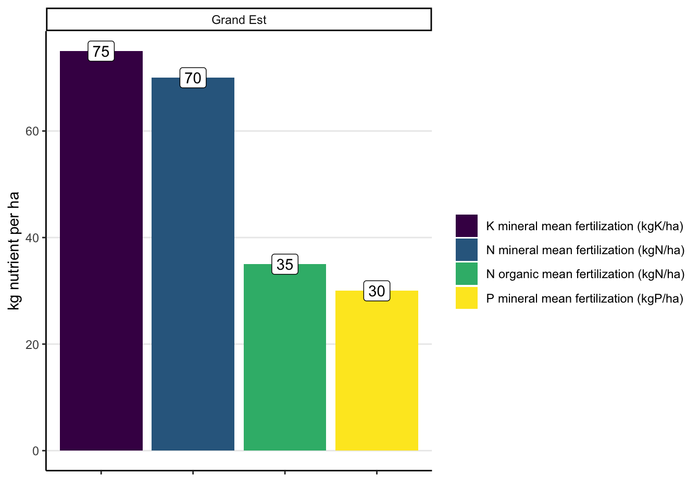
TOPO_orchards <- f_compute_fertilization(
TOPO_orchards,
fertilization_orchards_regional_mean,
c("name_region_parcel"),
parcel_area_ha, "kg"
)
#synthesize orchards TOPO (area and fertilization)
TOPO_orchards_region <- f_regional_synthesis(
TOPO_orchards, c("name_region_parcel", "our_label")
)
#remove temporary fertilization file
rm(fertilization_orchards_regional_mean)f_graph_regional_vineyards <- function(dataset_RPG, dataset_TOPO, y_variable){
ggplot(dataset_RPG) +
geom_area(
aes(Year, {{ y_variable }})
) +
labs(
x=""
) +
facet_wrap(
vars(name_region_parcel)
) +
geom_hline(
yintercept = dataset_TOPO %>% pull({{ y_variable }}),
linetype = "dashed"
) +
labs(
subtitle = "line: based on TOPO area\narea: based on RPG data"
)
}f_graph_regional_orchards <- function(dataset_RPG, dataset_TOPO, y_variable){
ggplot(dataset_RPG) +
geom_area(
aes(Year, {{ y_variable }}, fill=LIBELLE_CULTURE)
) +
labs(
x=""
) +
facet_wrap(
vars(name_region_parcel)
) +
geom_hline(
yintercept = dataset_TOPO %>% pull({{ y_variable }}),
linetype = "dashed"
) +
labs(
subtitle = "line: based on TOPO area\narea: based on RPG data"
)
}TBD
Régler ID, je pense tous les appeler ID mais rajouter variable disant si la base est RPG ou TOPO
rm(
RPG_vineyards, RPG_orchards,
RPG_major_crops_regional, RPG_vegetables_floral_region, RPG_vineyards_region, RPG_orchards_region,
TOPO_orchards_region, TOPO_vineyards_region
)
columns_to_select <- c(
"code_region_parcel",
"name_region_parcel",
"code_old_region_parcel",
"name_old_region_parcel",
"our_label",
"parcel_area_ha",
"N mineral fertilization (kgN)",
"P mineral fertilization (kgP)",
"K mineral fertilization (kgK)",
"N organic fertilization (kgN)",
"crop_fertilization_label",
"lat_RGF93_LAMB_93_parcel",
"lon_RGF93_LAMB_93_parcel",
"CODE_CULTURE"
#ID_RPG
)
# For the TOPO-based files (vineyards and orchards) we are permanent crops with no attributed year, we artificially add th years 2015-2020 for coherence with the RPG file.
add_years_to_TOPO_files <- function(arrow_query_file, years_vector, vector_columns_to_select, code_crop){
data_collected <- arrow_query_file %>% select(all_of(vector_columns_to_select)) %>% collect()
data_table_file <- setDT(data_collected)
# Create a list of data.tables for each year
list_of_data_tables <- lapply(years_vector, function(year) {
dt_copy <- copy(data_table_file)
dt_copy[, Year := year]
return(dt_copy)
})
# Combine the list of data.tables into one data.table
final_dt <- rbindlist(list_of_data_tables)
return(final_dt)
}
TOPO_orchards <- add_years_to_TOPO_files(TOPO_orchards, 2015:2020, columns_to_select, "VRG")
TOPO_vineyards <- add_years_to_TOPO_files(TOPO_vineyards, 2015:2020, columns_to_select, "VRC")
columns_to_select <- c(columns_to_select, "Year")
full_data <- bind_rows(
RPG_major_crops %>% select(all_of(columns_to_select)) %>% collect(),
RPG_vegetables_floral %>% select(all_of(columns_to_select)) %>% collect(),
TOPO_orchards,
TOPO_vineyards
)
f_save_parquet_files(
full_data,
"output/full_data/regional/",
paste0("R", key, "_", path_region, "_2015_2020.parquet")
)
rm(TOPO_orchards, TOPO_vineyards, RPG_major_crops, RPG_vegetables_floral, columns_to_select)csv_name <- paste0("R", key, "_", path_region, "_2015_2020.csv")
#by crops
full_data_regional_crops <- f_regional_synthesis(
full_data, c("Year", "code_region_parcel", "name_region_parcel", "our_label")
)
f_save_csv_files(
full_data_regional_crops, "output/regional_synthesis/by_crops",
csv_name
)
#total
full_data_regional <- f_regional_synthesis(
full_data, c("Year", "code_region_parcel", "name_region_parcel")
)
f_save_csv_files(
full_data_regional, "output/regional_synthesis",
csv_name
)ahouter UNIFA
#create background France map
#load map regions
sf_regions <- sf::st_read("source/maps/all_French_admin_units/ADMIN-EXPRESS-COG_2-1__SHP__FRA_2020-11-20/ADMIN-EXPRESS-COG/1_DONNEES_LIVRAISON_2020-11-20/ADE-COG_2-1_SHP_LAMB93_FR/REGION.shp")
sf_regions <- sf_regions %>% filter(INSEE_REG == key)
# resolution of raster pixels
resolution_meters <- 2000
km2_resolution <- (resolution_meters/10^3)^2
ha_resolution <- km2_resolution*100#selects columns for interest for year 2019
full_data <- full_data %>%
filter(Year==2019) %>%
select(
parcel_area_ha,
kgNmin = `N mineral fertilization (kgN)`,
kgPmin = `P mineral fertilization (kgP)`,
kgKmin = `K mineral fertilization (kgK)`,
kgNorg = `N organic fertilization (kgN)`,
lat_RGF93_LAMB_93_parcel, lon_RGF93_LAMB_93_parcel
)
#sf for geographical
full_data <- st_as_sf(full_data, coords = c("lon_RGF93_LAMB_93_parcel", "lat_RGF93_LAMB_93_parcel"), crs = CRS)
#create raster
raster_density <- f_prepare_raster(
full_data,
parcel_area_ha, kgNmin, kgPmin, kgKmin, kgNorg,
resolution_meters, sf_regions
)ATTENTION A LA LEGENDE X DES GRAPHIQUES DISTRIBUTION
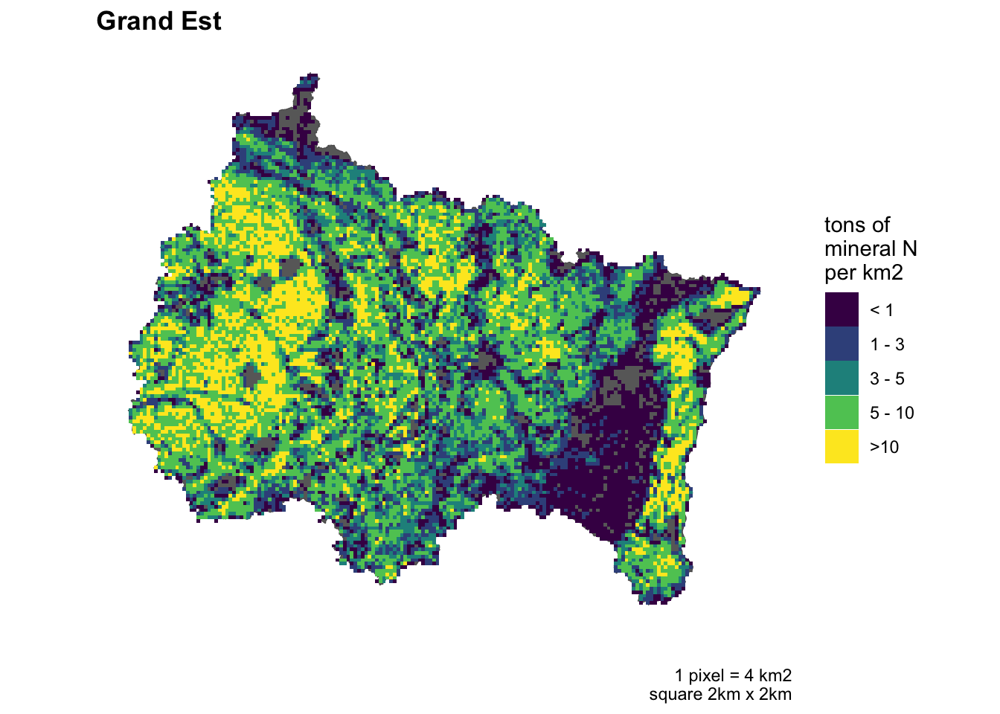
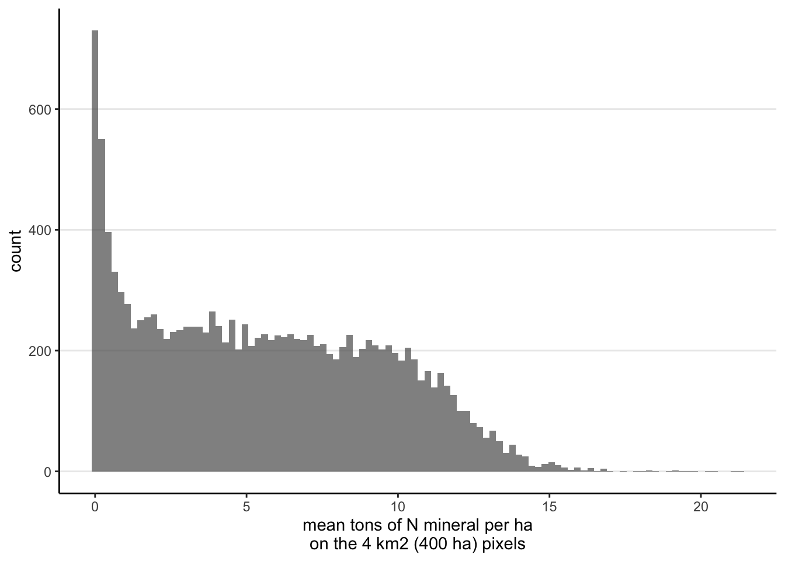
raster_density <- f_categorize_densities(
raster_density, "tPmin_per_km2", c(0, .1, .3, .5, 1, 100000), c("< 0.1", "0.1 - 0.3", "0.3 - 0.5", "0.5 - 1","> 1"))
f_grap_map_raster(
raster_density,
category, "tons of\nmineral P\nper km2", resolution_meters,
sf_regions, "#696969"
) +
labs(
title = name
)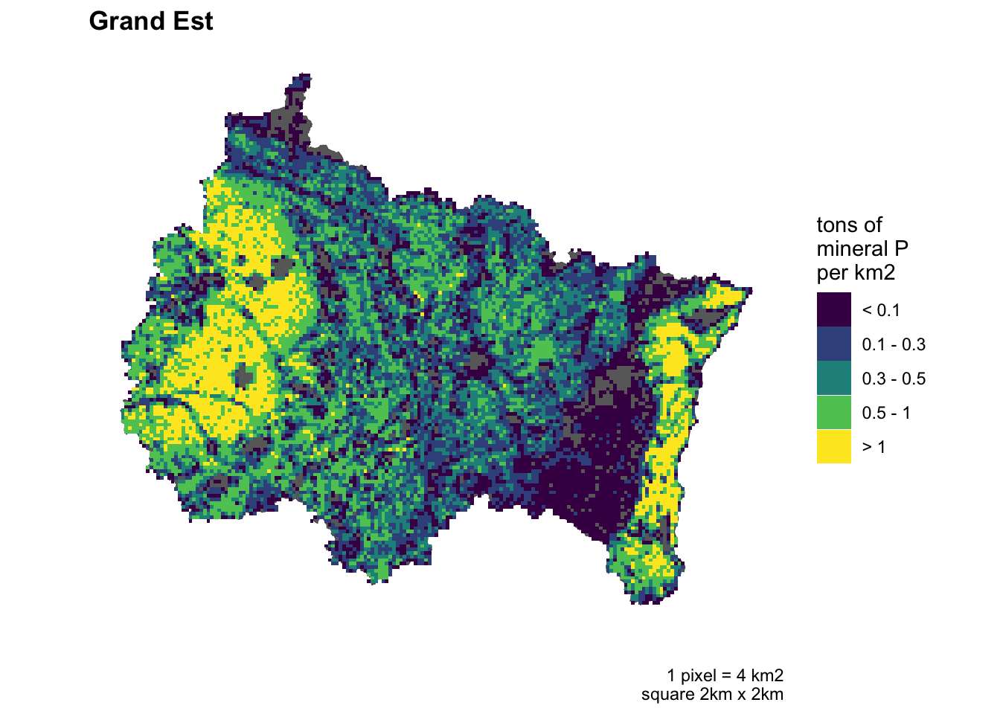
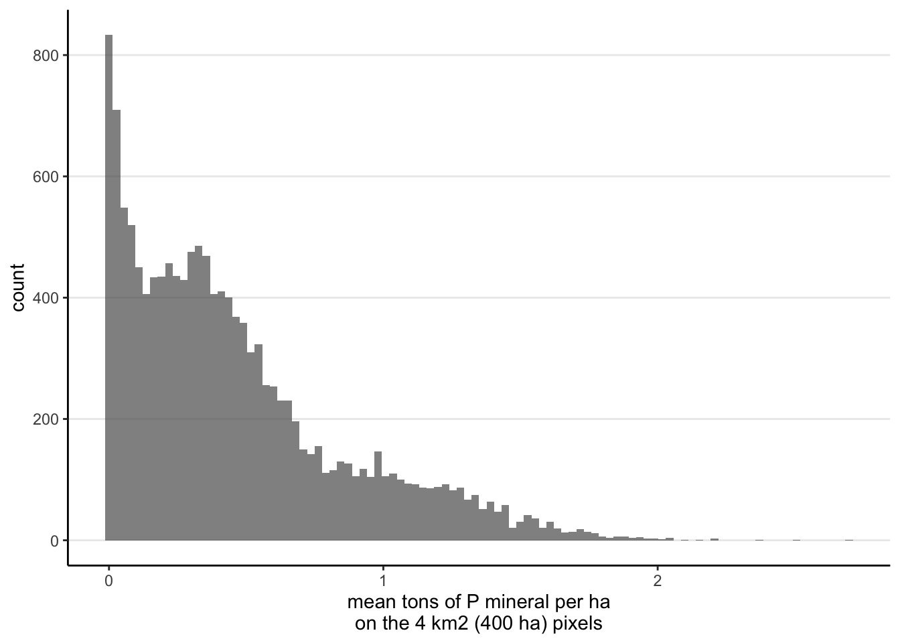
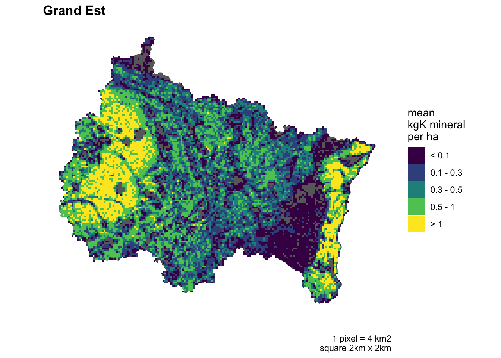
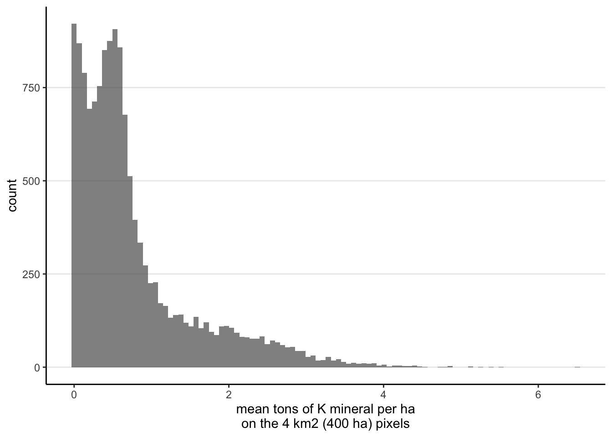
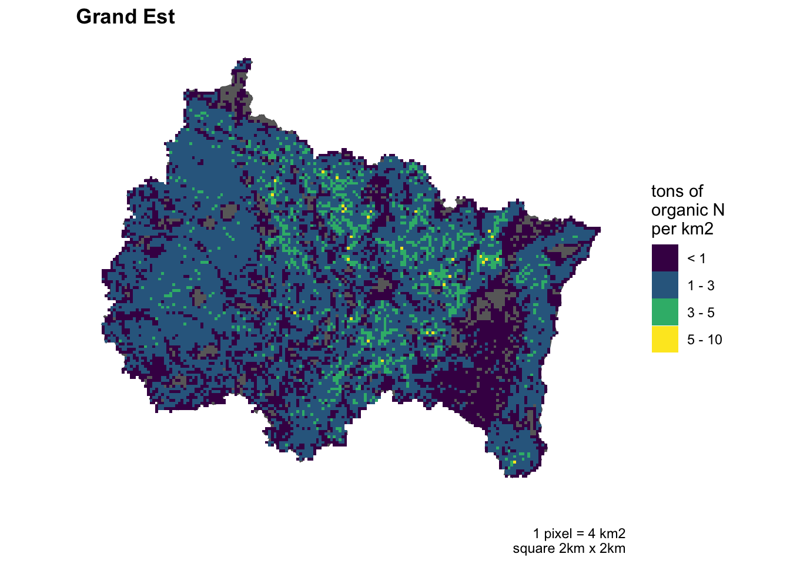
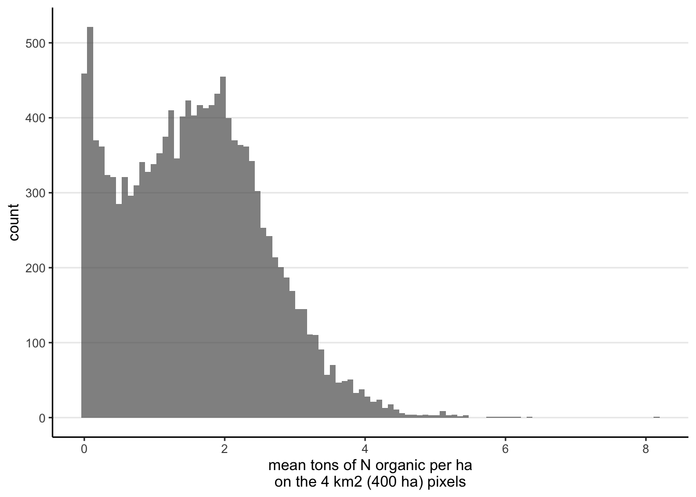
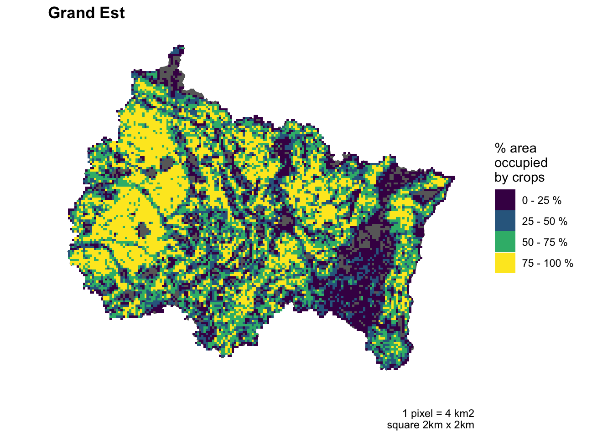
#produces distribution graphs, annotated, to check if the 10 km2 resolution used is legit
f_graph_distribution_consistency <- function(dataset, variable, x_intercept, annotation_label, fill_color){
gg <- ggplot(dataset) +
geom_histogram(
aes({{ variable }}, fill=""),
alpha=.7, bins = 100,
) +
scale_fill_manual(values = fill_color) +
scale_x_log10(
labels=scales::label_number(drop0trailing = TRUE)
) +
geom_vline(
xintercept = x_intercept,
linetype="dashed"
) +
theme(legend.position = "none") +
labs(y="") +
annotate(
x=x_intercept, y=0, geom="text", label=annotation_label, hjust=1, vjust=0
)
return(gg)
}#plot the 2 distribution graphs
plot_grid(
f_graph_distribution_consistency(
full_data, parcel_area_ha,
resolution_meters^2/10^4,
paste0("pixels \nresolution: \n", km2_resolution," km2 = \n", ha_resolution, " ha "), "#440154"
) +
labs(x="agricultural plots area (ha)") +
scale_x_log10(limits=c(0.1, 3*ha_resolution)),
f_graph_distribution_consistency(
raster_density, ha_per_km2, 100,
"1 km2 = \n100 ha ", "#5ec962"
) +
labs(x="ha per km2\n(cannot be superior to 100)") +
scale_x_continuous(limits=c(1, 150)),
align = "hv"
)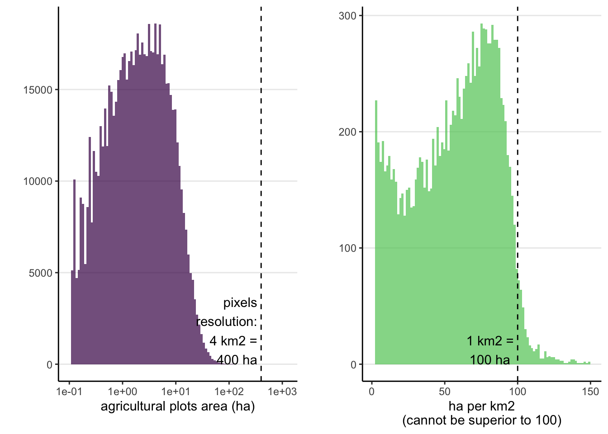